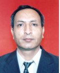

| Veb-sayt | azim.salahov.org |  |
| Anadan olduğu yer | Azərbaycan Respublikası, Kəlbəcər rayonu | |
| Təvəllüdü | 01.10.1955 | |
| Bitirdiyi ali təhsil müəssisəsi | Azərbaycan Dövlət Universiteti (Bakı Dövlət Universiteti) | |
| Elmi dərəcəsi | Geologiya-mineralogiya üzrə fəlsəfə doktoru | |
| Elmi rütbəsi | ||
| Namizədlik (PhD) dissertasiyasının mövzusu:
- ixtisas şifri - ixtisasın adı - mövzunun ad |
2515.01 Petrologiya, vulkanologiya Kürdəmir-Saatlı basdrılmış qalxımının yura maqmatik formasiyasının petroloji xüsusiyyətləri |
|
| Çapdan çıxmış elmi əsərlərinin ümumi sayı
- xaricdə çıxmış elmi əsərlərinin sayı - beynəlxalq bazalarda referatlaşdırılan və indeksləşdirilən jurnallarda çap olunan məqalələrin sayı |
20 9 |
|
| Müəlliflik şəhadətnamələrinin və patentlərin sayı | ||
| Kadr hazırlığı:
- fəlsəfədoktorlarının sayı |
||
| Əsas elmi nailiyyətləri | Cənubi Qafqazın depression zonalarında (Kür çökəkliyi) vulkanizmin təkamülünün əsas qanunauyğunluqları aşkar olunmuş və onun fəaliyyətinin mürəkkəb dövri-istiqamətli xarakterə malik olduğu müəyyən edilmişdir. Dövrü xarakter vulkanik fəaliyyətin hər bir etapında oxşar petroloji və geokimyəvi xüsusiyyətlərə malik süxurların əmələ gəlməsi ilə, istiqamətli xarakter isə zaman keçdikcə qələviliyin artması ilə təzahür olunur.
Müxtəlif geodinamik şəraitdə formalaşan süxurların dəqiq petroloji və geokimyəvi tədqiqi əsasında qədim vulkanik vilayətlərdə paleogeodinamik və paleotektonik rekonstruksiyalar həyata keçirməyə imkan verən indikator petroloji və geokimyəvi meyarlar işlənib hazırlanmışdır. |
|
| Elmi əsərlərinin adları |
|
|
| Respublika, beynəlxalq və xarici ölkələrin elmi qurumlarında üzvlüyü | Azərbaycan geoloqlarının Milli Komitəsi | |
| Pedaqoji fəaliyyəti | ||
| Digər fəaliyyəti | ||
| Təltif və mükafatları | ||
| Əsas iş yeri və ünvanı |
AMEA Geologiya və Geofizika İnstitutu, AZ1073, Azərbaycan Respublikası, Bakı ş., H.Cavid pr., 119 |
|
| Vəzifəsi | Aparıcı elmi işçi | |
| Xidməti tel. | ||
| Mobil tel. | ||
| Ev tel. | ||
| Faks | (+994 12) 5372285 | |
| Elektron poçtu | azimxp@gmail.com | |